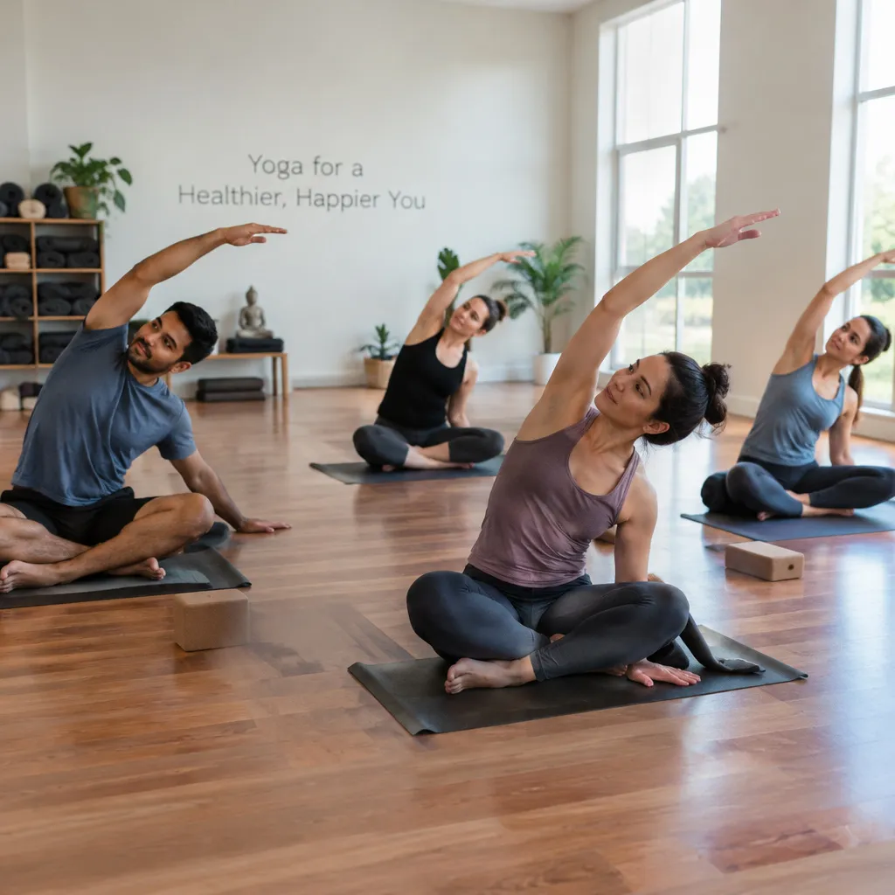
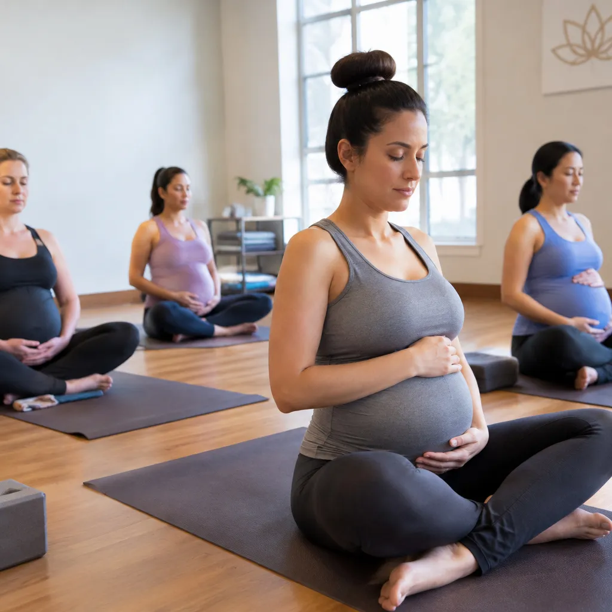
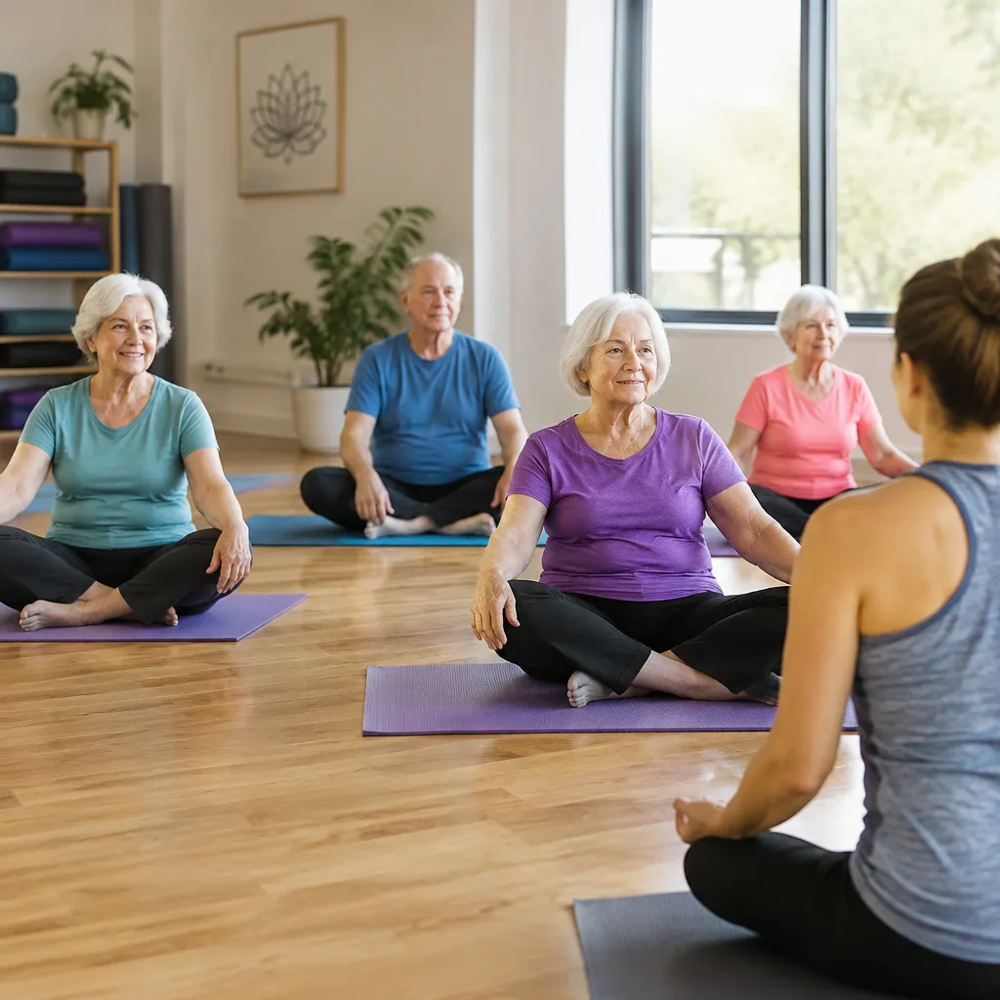
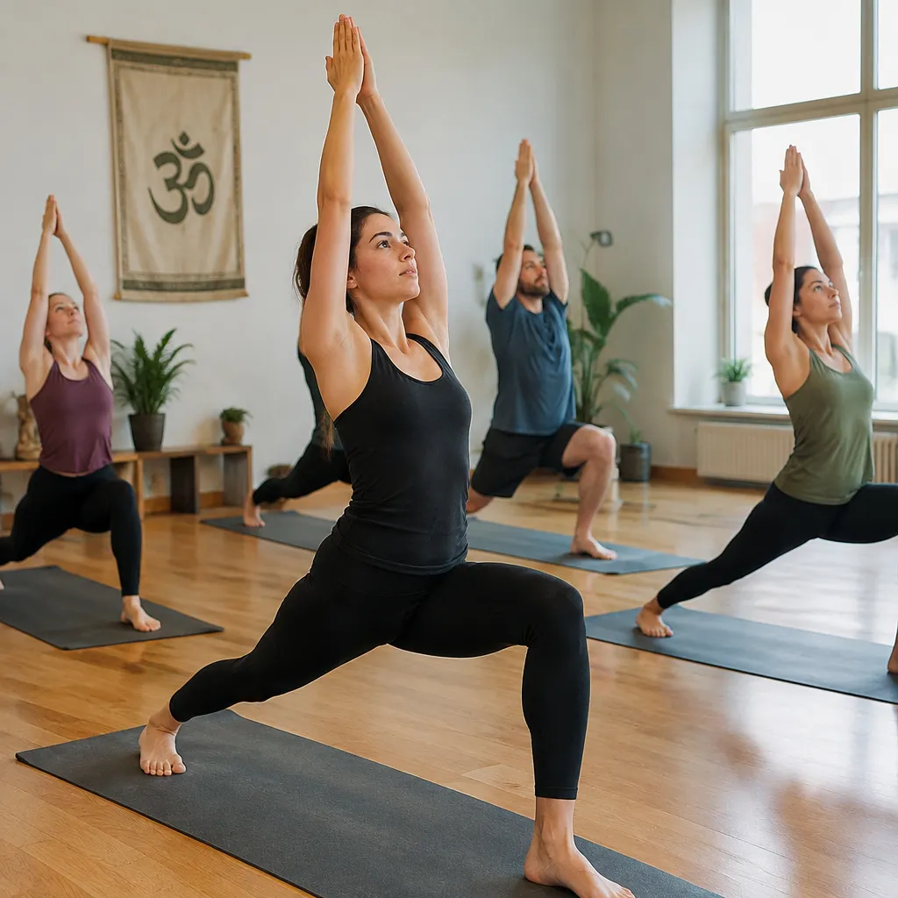
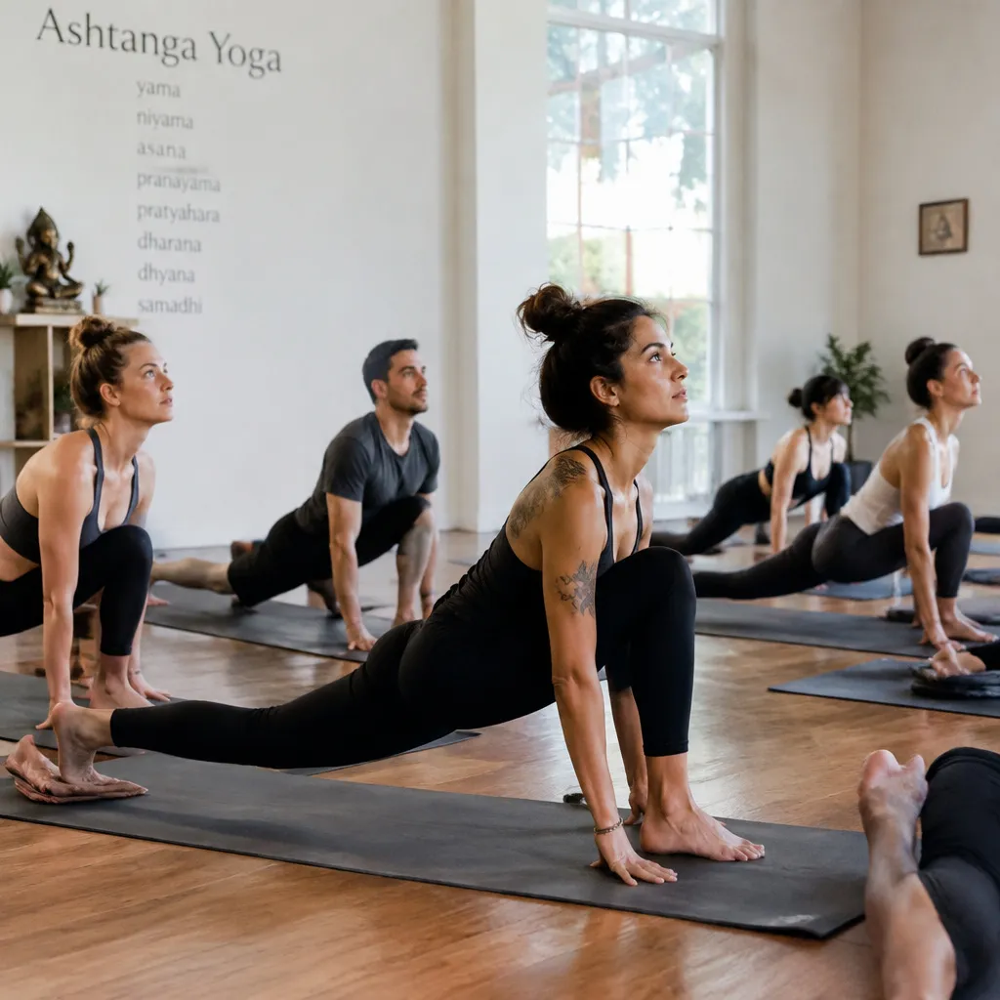
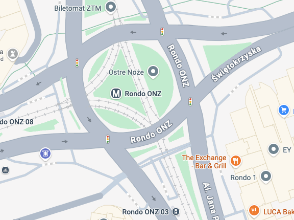

Pojedyncze zajęcia
50 zł/ zajęcia
Zajęcia jogi dla początkujących oraz zaawansowanych praktyków. Dołącz do nas i poczuj różnicę.
Wybierz zajęcia dopasowane do twoich potrzeb.

Łagodne wprowadzenie do podstawowych pozycji, oddechu i pracy z ciałem. Zajęcia krok po kroku uczą świadomego ruchu i pomagają zredukować stres, bez względu na poziom sprawności.

Delikatne sekwencje dostosowane do potrzeb przyszłych mam. To czas na wyciszenie, łagodny ruch i spokojny oddech, który przynosi ulgę i relaks.

Praktyka skupiona na utrzymaniu ruchomości stawów, równowadze i prawidłowej postawie. Spokojne tempo i wsparcie instruktora pozwalają dopasować ćwiczenia do własnych możliwości.

Klasyczna praktyka łącząca dłuższe zatrzymania w pozycjach z pogłębioną pracą oddechową. Idealna dla osób, które chcą rozwijać precyzję, siłę i koncentrację.

Dynamiczne i wymagające sekwencje budujące siłę oraz wytrzymałość. Regularna praktyka porządkuje umysł i uczy dyscypliny zarówno na macie, jak i poza nią.
Stały tygodniowy plan. Na zajęcia próbne możesz zapisać się w dowolnym terminie.
Poznaj osoby, które stoją za Studio Jogi.
Jesteśmy duetem instruktorów, którzy po latach praktyki w Polsce i Azji postanowili stworzyć miejsce, w którym joga łączy ludzi niezależnie od pochodzenia, wieku i poziomu sprawności. On prowadzi dynamiczne zajęcia hatha i ashtanga, ona specjalizuje się w jodze dla początkujących, kobiet w ciąży i seniorów.
W Studio Jogi wierzymy, że praktyka ma być dostępna dla każdego i płynąć we własnym tempie. Dlatego zajęcia prowadzimy w spokojnej, wspierającej atmosferze, dopasowując ćwiczenia do indywidualnych potrzeb każdej osoby.
Wybierz opcję dopasowaną do swojego rytmu praktyki.
50 zł/ zajęcia
180 zł/ miesiąc
400 zł/ 10 zajęć
Znajdziesz nas w spokojnej części miasta, blisko komunikacji.
Studio Jogi
ul. Przykładowa 12
00-001 Warszawa

Pierwsze zajęcia próbne są bezpłatne. Zarezerwuj swoje miejsce już dziś.
+48 000 000 000Polityka prywatności (placeholder)